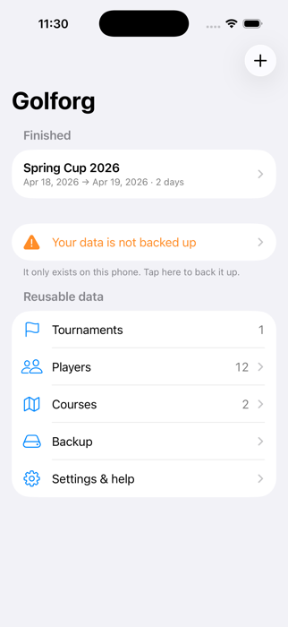
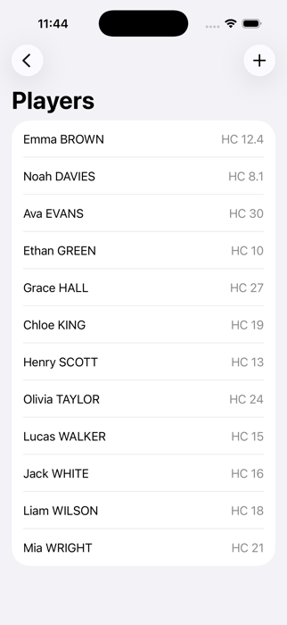
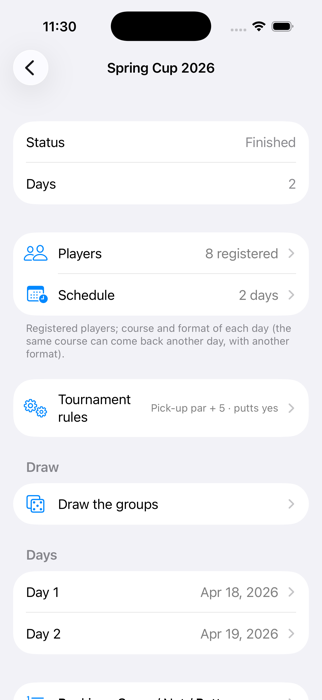
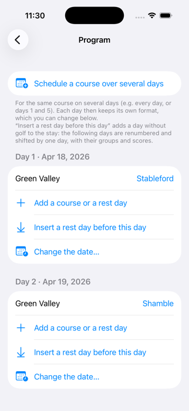
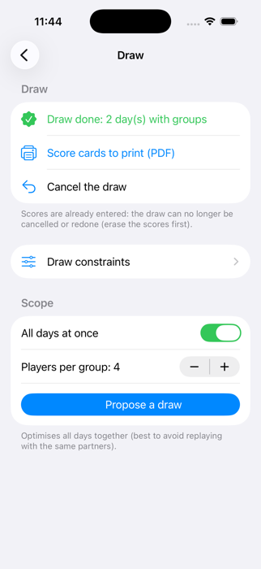
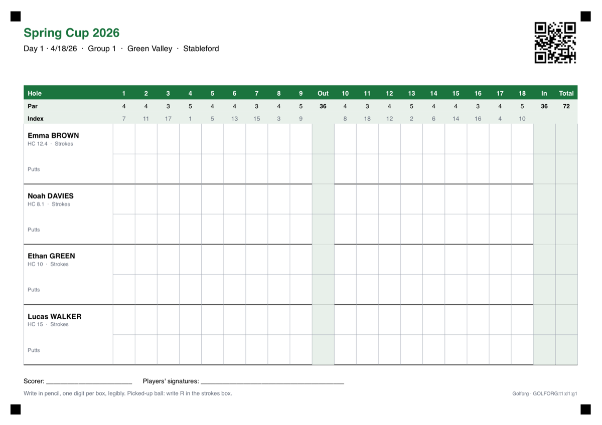
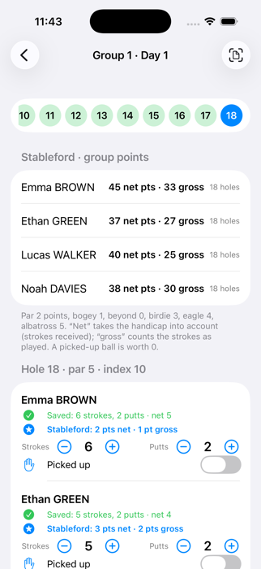
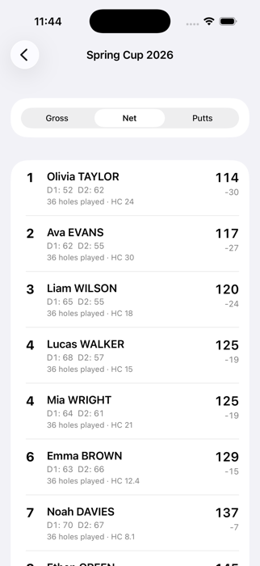
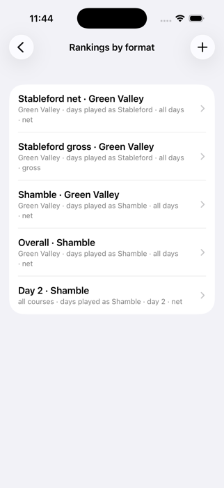
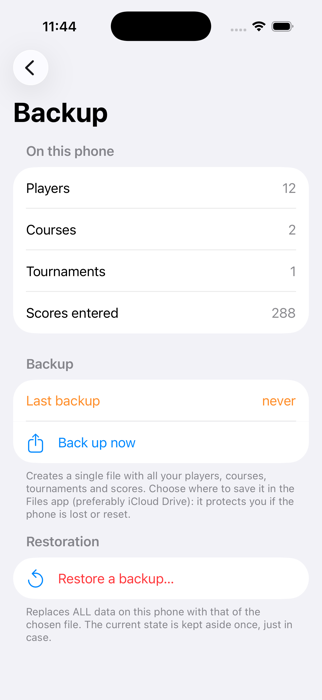

Golforg — Руководство пользователя
Организуйте гольф-турниры с iPhone: игроки, поля, жеребьёвка, карточки результатов, сканирование и рейтинги — всё на вашем телефоне.
Руководство по Golforg 2.0 · iPhone (iOS 17 или новее)
1 Что такое Golforg?
Golforg помогает организатору проводить гольф-турниры на один или несколько дней. Вы вводите игроков и поля, задаёте программу, проводите жеребьёвку групп, печатаете карточки результатов, а затем вводите результаты — кнопками или сканируя карточки, заполненные карандашом. Рейтинги обновляются сами и экспортируются в PDF.
Всё остаётся на вашем iPhone. Не нужны ни учётная запись, ни сервер, ни интернет на поле. Обратная сторона: резервные копии — ваша ответственность (см. «Резервная копия и восстановление»).
- Страйк-плей: рейтинги брутто и нетто, а также рейтинг по паттам.
- Стейблфорд: очки за лунку, нетто и брутто.
- Shamble и Scramble: командные форматы, рейтинг по группам и дням и общий рейтинг.

2 Быстрый старт
- Добавьте игроков (Главная → Игроки).
- Добавьте поля с парами и индексами (Главная → Поля).
- Создайте турнир кнопкой +.
- Запишите игроков и задайте программу: поле и формат на каждый день.
- Проведите жеребьёвку групп и напечатайте карточки результатов.
- Вводите результаты кнопками или сканируйте карточки.
- Смотрите рейтинги и экспортируйте их в PDF.
- Делайте резервную копию данных (Главная → Резервная копия).
3 Игроки
Главная → Игроки → +. У игрока есть имя, фамилия и гандикап от 0 до 54 (допускаются десятичные). Имена отображаются как «Имя ФАМИЛИЯ».
Чтобы ввести сразу много игроков, используйте Импортировать список: одна строка на игрока, Имя ФАМИЛИЯ ; гандикап, например Иван ПЕТРОВ ; 13 или Иван ; Петров ; 13. Уже существующему игроку (то же имя) просто обновляется гандикап.

4 Поля
Главная → Поля → +. Задайте название поля (и страну, если хотите), затем для каждой из 18 лунок укажите пар (от 3 до 5) и индекс (от 1 до 18, каждый один раз).
5 Создание турнира
Главная → +. Введите название и число дней (от 1 до 14). Можно указать первый день: тогда дни идут подряд. День перерыва можно добавить позже.
Карточка турнира объединяет всё: Игроки, Программа, Правила турнира, Жеребьёвка, Дни, Рейтинги и экспорт в PDF. Внизу «Стереть все результаты» (удобно после пробного запуска) и «Удалить этот турнир» требуют ввести код.

6 Игроки и программа
Игроки: отметьте участников. Программа: на каждый день добавьте поле и формат (Страйк-плей, Стейблфорд, Shamble или Scramble). Одно и то же поле может повторяться в другой день с другим форматом.
- Назначить поле на несколько дней сразу ставит одно поле и один формат на выбранные дни.
- Добавить поле или перерыв: перерыв — день без гольфа.
- Вставить перерыв перед этим днём добавляет день в поездку; следующие дни перенумеровываются и сдвигаются вместе с группами и результатами.
- Изменить дату… переносит день; с «Сдвинуть и следующие дни» сдвигается и остальная часть поездки.

7 Правила турнира
- Подобранный мяч: игрок, подобравший мяч, получает на лунке пар + N в брутто и нетто (по умолчанию 5), 0 очков в Стейблфорде. В командных форматах (shamble, scramble) такой результат учитывается, только если у остальных результатов нет.
- Учитывать патты: если включено, при вводе лунки запрашиваются удары и патты, а рейтинг по паттам доступен. Если выключено, запрашиваются только удары.
8 Форматы и подсчёт
- Нетто = удары минус полученные удары. Игрок получает свой (округлённый) гандикап, распределённый по лункам: гандикап 20 даёт 1 удар на каждой лунке и ещё один на 2 лунках с самыми низкими индексами (1 и 2).
- Стейблфорд (относительно пара, нетто или брутто): пар 2 очка, богги 1, дабл-богги или хуже 0, бёрди 3, игл 4, альбатрос 5. Подобранный мяч — 0.
- Shamble: на каждой лунке учитывается лучший нетто группы. Scramble: учитывается лучший брутто группы. Рейтинги даются по группам и дням, а общий — по игрокам.
- Места: равные суммы делят место (1, 1, 3). Неполный итог (сыграны не все лунки) сопоставим только при равном числе лунок.
9 Жеребьёвка групп
Турнир → Разбить на группы. Выберите дни (или все сразу) и число игроков в группе (от 2 до 6), затем Предложить жеребьёвку. Раздел Проверка перечисляет невыполненные ограничения. Нажмите на игрока, затем на другого в тот же день, чтобы поменять их местами. Выберите поле на каждый день и нажмите Подтвердить и создать группы.
Ограничения жеребьёвки направляют её: не играть повторно с теми же партнёрами, уравнивать гандикапы, разделять или объединять игроков, закреплять игрока за группой, отмечать игрока как недоступного. Каждое ограничение либо строгое, либо предпочтение с весом от 1 до 10.
Повторить или отменить существующую жеребьёвку: приложение показывает число, которое нужно ввести (действует 5 минут). Если результаты уже есть, это невозможно: сначала сотрите их.

10 Карточки результатов и ввод результатов
На экране жеребьёвки Карточки для печати (PDF) создают по одной странице A4 в альбомной ориентации на группу — с полем, игроками и QR-кодом. Печатайте в масштабе 100 % (не «по размеру страницы») и не закрывайте 4 чёрных квадрата по углам.

Игроки заполняют карточку карандашом, по одной цифре в клетке, разборчиво. Для подобранного мяча напишите R в клетке ударов.
Кнопками: День → группа. Лунки показаны сверху; используйте − и + для ударов и паттов, при необходимости включите «Подобран» и нажмите Сохранить лунку. Сохранённая строка показывает нетто и очки Стейблфорда. Можно стереть лунку для всей группы или смахнуть строку игрока влево, чтобы стереть его результат.

Сканированием: День → Сканировать карточку (или кнопка сканирования в группе). Сфотографируйте всю страницу — ровно и при хорошем освещении, так чтобы были видны QR-код и 4 чёрных квадрата. Приложение считывает цифры на телефоне. Сомнительные клетки отмечаются оранжевым или красным: исправьте их (можно показать только лунки для проверки), затем нажмите Сохранить результаты.
11 Рейтинги и PDF
Рейтинги Брутто / Нетто / Патты суммируют все дни. Рейтинги по форматам (Стейблфорд, shamble, scramble) можно ограничить некоторыми полями, днями или форматами; используйте Создать из форматов для обычных рейтингов или + для собственных (включая свою шкалу Стейблфорда).


Экспорт в PDF: отметьте нужные рейтинги, создайте PDF и поделитесь им (почта, сообщения, AirPrint…).
12 Резервная копия и восстановление
Ваши данные существуют только на этом телефоне. Делайте копии регулярно: Главная → Резервная копия → Сохранить сейчас, затем выберите место для файла в приложении Файлы (лучше iCloud Drive). Если копии не было неделю, на главном экране появится напоминание.
Чтобы восстановить данные (новый телефон или после сбоя): Резервная копия → Восстановить копию…, выберите файл. Приложение покажет содержимое и заменит все данные на телефоне; предыдущее состояние один раз сохраняется отдельно на всякий случай.

13 Язык, поддержка и конфиденциальность
Главная → Настройки и помощь: выберите язык (английский, французский, немецкий, испанский, итальянский, португальский, упрощённый китайский, русский; по умолчанию язык телефона), свяжитесь с поддержкой (письмо содержит технические сведения, но никогда не имена), посмотрите журнал диагностики, откройте это руководство или политику конфиденциальности.
Golforg не собирает никаких данных. Прочитайте политику конфиденциальности.
14 Устранение неполадок
| Проблема | Вероятная причина | Что делать |
|---|---|---|
| Сканер не находит QR-код или квадраты по углам | Страница не вся в кадре, либо снимок смазан или тёмный | Сфотографируйте всю страницу, ровно, при хорошем свете, вместе с углами |
| Некоторые цифры считаны неверно | Слишком светлый карандаш или неразборчивый почерк | Исправьте оранжевые/красные клетки при проверке; в следующий раз пишите темнее, по одной цифре в клетке |
| «Эта карточка относится к другому турниру / дню / группе» | Не тот лист или сканирование не в том дне | Откройте нужные день и группу или возьмите нужную карточку |
| Не могу повторить или отменить жеребьёвку | Результаты уже есть | Сначала сотрите результаты (лунку или «Стереть все результаты») |
| У формата нет рейтинга | Рейтинг ещё не создан | Рейтинги по форматам → Создать из форматов |
| Мои данные пропали (новый телефон, переустановка) | Данные хранятся только на телефоне | Резервная копия → Восстановить копию… с вашим последним файлом |
| Просят патты, а я их не считаю | Включено «Учитывать патты» | Правила турнира → выключите «Учитывать патты» |
Политика конфиденциальности · Поддержка: golforg78@icloud.com